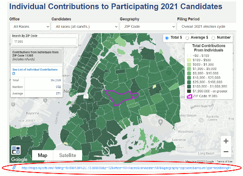

You can share a specific link to your map, or you can embed the map in your web page. Both options are explained below.
Once you zoom in on the map, click/tap the map to highlight an area, or just select a citywide view for a particular candidate & filing period, we provide a customized link just for your map.
Look below the map for the link sharing box (screenshot below), copy the link, and share it on Twitter, Facebook, etc.
When you copy the custom link as described above, just add the following text at the end of the link:
&embed=true
Then you can include this new link in an iframe using the following code and add it to your web page.
Please credit the NYC Campaign Finance Board with a link to www.nyccfb.info.
REMEMBER TO REPLACE "YOUR LINK HERE" BELOW WITH YOUR LINK. AND YOU CAN ALSO CHANGE THE WIDTH/HEIGHT SETTINGS TO MATCH YOUR WEBSITE.